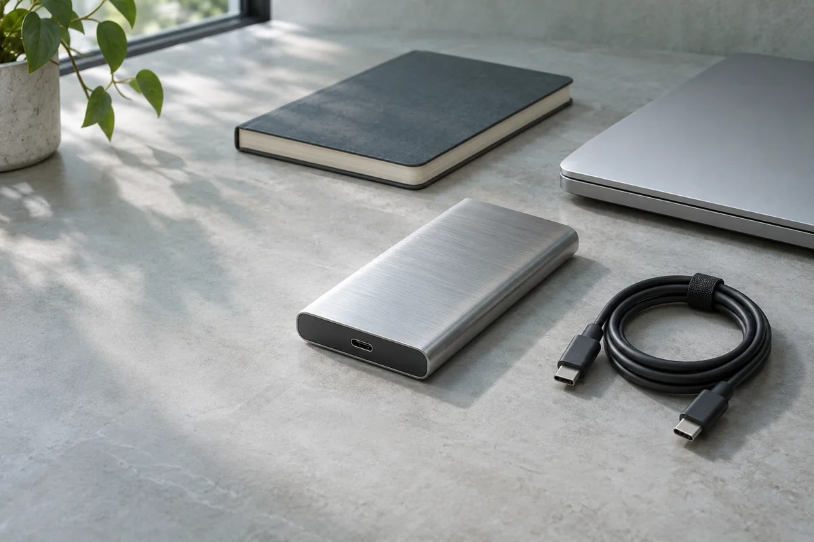

파일은 내 기기에.
열쇠는 나에게.
서버에 파일을 업로드하지 않습니다. 선택한 파일을 이 브라우저 안에서 암호화하거나 복호화합니다.

파일 잠그기 / 열기
파일을 선택해 주세요.
결과 다운로드알아두세요
- 여기서 ‘일회성’은 파일마다 새 비밀번호를 정한다는 뜻입니다. 복호화에는 암호화 때와 동일한 비밀번호가 필요합니다. 서버가 없으므로 한 번만 열리게 강제하거나 비밀번호를 만료·회수할 수 없습니다.
- 비밀번호·파일을 로컬 저장소에 기록하지 않습니다. 페이지를 닫으면 다시 선택해야 합니다. 다만 브라우저·운영체제 메모리의 완전 삭제를 보장할 수는 없습니다.
- AES-256-GCM과 PBKDF2-SHA-256 600,000회를 사용합니다. 기기 성능에 따라 수 초 이상 걸릴 수 있습니다. 암호 길이만으로 안전을 보장하지 않습니다.
- 파일 이름도 암호화하지만 파일 크기와 이 도구의 형식은 숨기지 않습니다. 다운로드 이름의 위험한 경로·제어 문자는 바뀔 수 있습니다.
- 다운로드한 원본 파일을 자동으로 실행하거나 미리 보지 않습니다. 출처가 의심스러운 파일은 열지 마세요.
- HTTPS의 신뢰할 수 있는 사이트와 최신 브라우저에서 사용하세요. 악성 확장 프로그램·감염된 기기·변조된 사이트는 보호하지 못합니다.
- 제3자 스크립트·광고·분석·외부 폰트·서비스 워커는 없습니다. 정적 페이지 자체를 받을 때는 호스팅 서비스에 일반 접속 정보가 전달될 수 있습니다.
암호 설계 참고
MDN AES-GCM · Web Crypto 키 유도 · OWASP PBKDF2 지침
외부 참고 링크를 누를 때만 해당 사이트로 이동합니다. 파일과 비밀번호를 전달하지 않습니다.